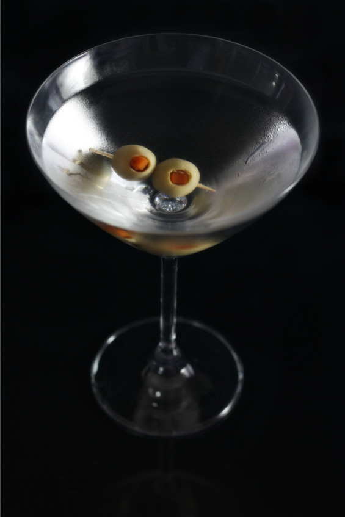
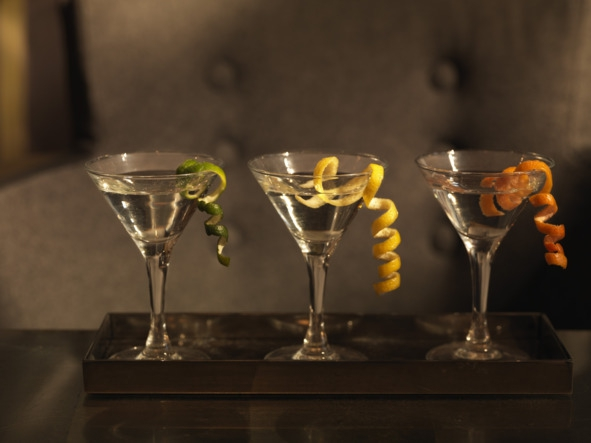

Понятие и виды вермутов
Вермут (нем. Wermut – полынь) – крепленое вино с содержанием спирта 11—25% (обычно 16—18%) об., ароматизированное экстрактом полыни, тысячелистника, мяты, корицы, кардамона, другими травами и специями.
Со времен Древней Греции вермуты использовались в качестве лекарственных настоек и только в XVIII веке перешли в разряд алкогольных напитков. Красные сладкие вермуты появились в Италии, а белые сухие – во Франции, поэтому два базовых вида – italian vermouth и french vermouth – указывают на стиль напитка, а не на страну производства.
Основным ингредиентом любого вермута является альпийская полынь, которой добавляют до 50% от всего количества трав. Также широко используются тысячелистник, мята, корица, кардамон, черная бузина, мускатный орех, кора хинного дерева, цедра цитрусовых, пижма, ромашка, гвоздика и пр. Всего в составе вермута может находиться несколько десятков ингредиентов.
Сначала все добавки высушивают и измельчают, затем настаивают до 20 дней на спирте. Полученный экстракт фильтруют, смешивают с винной основой, добавляют сахар и спирт. Сахар смягчает вкус, а спирт способствует растворяемости экстракта трав в вине. Готовый вермут охлаждают до отрицательной температуры (вплоть до -5° C), фильтруют, постепенно нагревают до комнатной температуры и бутилируют.
Популярные марки вермутов: Martini, Cinzano, Campari, Dollin, Delasy, Salvatore. Это значит, что «Мартини» является всего лишь одной из марок вермутов, а не отдельным видом алкогольного напитка, как, например, водка, вино или коньяк.
Виды вермутовУ каждого производителя своя маркировка продукции, дальше указаны общепринятые элементы классификации:
– Secco, Dry («секко», «драй», «сухой») – содержание сахара не превышает 4%;
– Bianco («Бьянко», «белый») – произведен на основе белого вина, концентрация сахара 10—15%;
– Rosso («Россо», «красный») – основой является красное вино, обычно это сладкие напитки, содержащие больше 15% сахара;
– Rose («Розе», «розовый») – состоит из смеси белого и красного вина, обычно содержит 10—20% сахара;
– Bitter («Биттер», «горький») – крепкий (30—75% об.) вермут с горьким вкусом, травы настаивают на спиртовой основе, вино в составе отсутствует или его количество минимально.
Как пить вермутТемпература подачи, бокалы, выбор закуски и соков зависит от вида вермута.
1. Bianco. «Бьянко» правильно подавать в конусообразной коктейльной рюмке на длинной ножке (второе название – бокалы для мартини) охлажденным до 12—15° C или со льдом (замороженными фруктами: клубникой, вишней, дыней, ананасом). При более высокой температуре у напитка появляется излишняя горечь и резкий запах полыни. Слишком сильно охлажденный белый вермут «замораживает» язык, в результате уникальный вкус теряется. Если напиток подают со льдом или соком, можно использовать любые бокалы объемом 120—250 мл (наполнять максимум на ?).
Главное не пить вермут из рюмок и стопок, предназначенных для крепкого спиртного, это считается моветоном.
«Бьянко» сочетается с легкими солеными закусками и фруктами. Классикой считаются твердые сорта сыра и соленые крекеры. Более сытный вариант – бутерброды с белым хлебом, сыром и ветчиной. Из фруктов лучше выбрать апельсины, ананасы, киви, клубнику. Иногда белый вермут закусывают арахисом, фундуком, фисташками и миндалем, но орехи забивают рецепторы языка, и вкус чувствуется не так ярко. Эстеты пьют «бьянко» с оливкой или маринованной коктейльной луковичкой, смотрится это красиво, однако вкус нравится на всем.

Бокал для вермута, второе название – коктейльная рюмка
Для снижения сладости и крепости белый вермут разбавляют кислым соком (апельсиновым, грейпфрутовым, лимонным, яблочным). Классическая пропорция – 1:1, но можно добавить больше сока. В последнее время стало модным смешивать «бьянко» с нектарами, например персиковым или соком манго, получаются очень сладкие сочетания, которые подходят разве что для десерта.
2. Rosso. «Россо» пьют охлажденным до 10—12° C. Другой метод – добавить лед или замороженные фрукты (вишню, черешню, клубнику) прямо в бокал. В чистом виде мужчинам подают красный вермут в низких квадратных или шестигранных стаканах с толстым дном, женщинам – в коктейльных рюмках с соломинкой или без. Бокал наполняют максимум на две трети объема. «Россо» относится сразу к двум категориям: аперитивам и дижестивам, поэтому его можно ставить на стол перед приемом пищи, наслаждаться на протяжении всей вечеринки (фуршета) как единственным алкогольным напитком или подать на десерт.
Красный вермут хорошо сочетается с фруктами (апельсины, клубника, вишня, лимон), оливками, твердыми сырами, солеными орешками и крекерами. Иногда к «Россо» подают бутерброды из белого хлеба с кусочками лосося или канапе из сыра, ананаса и салата.
«Россо» разбавляют негазированной минеральной водой, вишневым, гранатовым, грейпфрутовым или апельсиновым соком. Классические пропорции – 1:1 или 1:2 (одна часть вермута к двум частям сока).
3. Rose. Промежуточный вид, с которым хорошо сочетаются закуски, подходящие к красным и белым вермутам. Лучший вариант для подачи – коктейльные рюмки, винные бокалы или стаканы для виски с толстым дном. Вкус оптимально раскрывается при температуре 10—12° C. В качестве оригинальной закуски подойдут фаршированные лимоном оливки, горький шоколад, сыр, овощи гриль, свежие зеленые овощи, а также салями и куриное мясо.
Розовый вермут разбавляют вишневым, апельсиновым, гранатовым или грейпфрутовым соком в пропорции 1:2 или 1:3.
4. Dry и Bitter. Сухой вермут принято пить как аперитив в чистом виде охлажденным до 8—10° C из коктейльных рюмок или стаканов с толстым дном. «Драй» хорошо сочетается с маслинами, оливками и твердыми сортами сыра. Любителям сытных закусок рекомендовано подавать к сухому вермуту бутерброды с лососем, красной рыбой и ветчиной. Еще один неплохой вариант – любые салаты без майонеза.
«Биттер» пьют в чистом виде сильно охлажденным (3—5° C) с высококалорийной закуской. Выбор бокалов зависит от крепости: чем выше содержание спирта, тем меньше объем. К таким напиткам можно подавать любые блюда, сочетающиеся с крепким алкоголем. Например, вареный картофель, жареное мясо, рыбу и салаты.
5. Сладкий вермут. Является классическим дижестивом. К этому виду относятся красные, розовые и белые вермуты с высоким содержанием сахара (больше 15%). Их лучше закусывать не очень сладкими десертными блюдами: горьким шоколадом, мороженым, фруктами и ягодами. Считается, что к этим вермутам хорошо подходят конфеты и торты, но из-за высокой сладости сочетание получается слишком приторным и полностью заглушает вкус вермута.
«Мартини» – самая известная марка вермута в миреНеобыкновенная популярность бренда – заслуга Алессандро Мартини, «крестного отца» напитка. Интересно, что синьор Алессандро – вовсе не изобретатель «Мартини», как можно было бы подумать, а промоутер, рекламный агент. То, что марка носит его фамилию, само по себе говорит о грандиозном вкладе этого человека в развитие компании.
НачалоСудя по сохранившимся историческим записям, ароматные настойки на лечебных травах были известны еще в Древней Греции. Чтобы один из таких рецептов стал «дамским алкоголем №1 в мире», потребовалось стечение сразу нескольких обстоятельств.
В 1847 году четверо предприимчивых итальянцев (Клемент Мишель, Карло Ре, Карло Аньелли и Элиджио Баудино) организовали в Турине компанию Distilleria Nazionate da Spirito di Vino, специализирующуюся на выпуске ароматизированных вин. В Европе вообще и в Италии в частности в те времена как раз пошла мода на сладкие и не очень крепкие травяные настойки, так что компания преуспевала.
В 1857 виноделы взяли на работу 23-летнего флорентийца Алессандро Мартини и не прогадали – уже через шесть лет молодой предприниматель стал управляющим, вывел компанию в лидеры рынка по своему сегменту, а заодно и дал предприятию новое имя: Martini, Sola&Cia. Никаких насильственных захватов или нечестной игры: пожилые основатели потихоньку начали умирать или отходить от дел, управление само перешло в руки молодого предпринимателя и его надежного бухгалтера Теофилио Сола.
К этому моменту в состав правления уже вошел молодой винодел и знаток лекарственных трав Луиджи Росси – именно он, непрестанно экспериментируя с добавками и пропорциями, изобрел классический рецепт «Мартини» (Martini Rosso), благодаря которому компания на голову обошла конкурентов и более чем сто лет твердо удерживала на рынке первое место.
Луиджи Росси был, как это сказали бы сейчас, self-made man, то есть он всего добился в жизни сам. Отец молодого итальянца потерял богатство и здоровье в наполеоновских войнах, маленький Луиджи с детства понял, что рассчитывать можно только на себя. Переехав в Турин, Росси занялся гербологией («травничеством»). Скоро стало очевидно, что у молодого человека не просто склонность или талант – он настоящий гений. Мартини и Сола приложили немало усилий, чтобы заполучить Росси в свою команду. Наконец, в 1863 году им это удалось – так началась официальная история «Мартини».
Нельзя сказать, что на рынке было мало вермутов – просто напитки других марок были слишком резкими или горькими на вкус. Росси создал мягкий и приятный вермут, лишенный недостатков конкурентов, а Мартини сумел его грамотно разрекламировать и продать – в этом кроется секрет бренда.
РазвитиеВ 1864 году трое партнеров построили новый завод по производству вермута в деревушке Пессионе, недалеко от Турина. Место было выбрано неслучайно: оно находилось в непосредственной близости от крупного города, богатых нужными травами Альп и железной дороги. Последнее обстоятельство было особенно важным, поскольку многие из входящих в рецептуру компонентов поставлялись из-за границы: чабрец, алоэ, кориандр, хина, кассия, корица, кардамон – все эти пряности не росли в Италии. Уже в 1865 году вермут Martini Rosso завоевал первую золотую медаль в Дублине, а 13 лет спустя бренд взял Гран-при в Париже, не говоря уже о множестве менее значимых побед.
В 1879 году Сола умер, его семья продала свою долю в бизнесе оставшимся двум партнерам, а компания получила новое имя – Martini&Rossi. К концу XX века красный вермут «Мартини» обладал уже несколькими десятками самых престижных наград в мире алкоголя и прочно ассоциировался с лоском, роскошью и богемным образом жизни. Некоторые из золотых медалей напитка до сих пор украшают этикетку – вместе с несколькими гербами европейских королевских дворов.
Луиджи Росси умер в 1892 году, но оставил четырех наследников, Теофилио, Эрнесто, Чезаре и Энрико, которые не бросили дело отца: бренд продолжил захватывать мир, филиалы Martini&Rossi открылись в Буэнос-Айресе, Женеве, Барселоне, Монтекьяро-д’Асти. К 1903 году вермут «Мартини» экспортировали уже в более чем 70 стран мира, а в 1905 умер и сам сеньор Алессандро.
В 1911 году прошла международная выставка в Турине, организованная Теофилио Росси с целью утвердить позиции бренда на рынке и привлечь к нему новых «почитателей». Замысел удался – «Мартини» стал звездой мероприятия, всего же за полгода работы выставку посетило более 7,5 млн человек, которые впоследствии разнесли по миру весть об удивительном вкусе нового вермута. В 1922 году название бренда сократилось до Martini, только в США продолжали использовать предыдущую версию с двумя фамилиями, так как просто слово «Мартини» ассоциируется в Америке с коктейлем на основе джина, и только потом – с маркой вермута. На счету компании множество побед: этот вермут сумел покорить даже японского императора Есихито, Папу Пия XI, короля Витторио Эмануэля III.
Вторая мировая война принесла огромные убытки, но вермут Martini удивительно быстро оправился от потерь и продолжил триумфальное восхождение в новом, послевоенном мире. Удачные рекламные кампании (лицом бренда в свое время были Шэрон Стоун и Наоми Кэмпбелл) сделали «Мартини» одним из самых узнаваемых и элитных спиртных напитков в мире. Покупая его, уже в магазине люди предвкушают веселый вечер. В 1992 году компания вошла в состав международного концерна Bacardi и продолжает функционировать уже под именем Bacardi-Martini Ltd.
Виды МартиниПосле первого и «классического» Martini Rosso ассортимент компании расширился. Основные виды Martini:
– 1865 г. – Rosso («Россо»). Отличается насыщенным ароматом и горьковатым вкусом. Дегустаторы отмечают в «Мартини Россо» прекрасное сочетание вина и трав. Добавление карамели придало напитку темно-янтарный цвет. Rosso можно пить как в чистом виде, так и в составе коктейлей. С этим видом хорошо сочетаются лимон, апельсиновый сок и лед. Крепость – 16% об.
– 1900 г. – Extra Dry («Экстра Драй»). Соломенного цвета с ярким ароматом ириса, малины и лимона. Отличается низким содержанием сахара (2,8% вместо 16%) и высоким процентом алкоголя (18% вместо 16% по объему). «Экстра Драй» используют в качестве основы для коктейлей, также его пьют охлажденным в чистом виде.
– 1910 г. – Bianco («Бьянко»). Светло-соломенного цвета, имеющий приятный аромат с оттенком пряностей и ванили. На вкус мягче, чем Rosso. Благодаря мягкому сбалансированному вкусу и умеренной крепости (16% об.) «Бьянко» считается женским напитком. Этот мартини пьют в чистом виде, с тоником, лимонадом и содовой.
– 1980 г. – Rosato («Росато»). В производстве одновременно используется белое и красное вино. Это напиток розового цвета с нежным и стойким букетом ароматов. Во вкусе «Росато» чувствуются оттенки гвоздики и корицы. Крепость – 15% об.
– 1998 г. – D’Oro («Доро»). Разработан специально для жителей Швейцарии, Дании и Германии, где популярен вкус белого вина с фруктовым оттенком. Золото в названии намекает вовсе не на элитарность напитка, а на солнечный свет и летнее тепло, которого так не хватает жителям североевропейских стран. Крепость – 9% об.
– 1998 г. – Fiero («Фиеро»). Создан для жителей стран Бенилюкса. Отличается насыщенным ароматом, в котором доминирует запах красных апельсинов. Крепость – 15% об.
– 2010 г. – Gold («Голд»). В составе вермута цедра сицилийских апельсинов, калабрийский шафран, индонезийский перец кубеба, индийский имбирь, испанский бергамот и эфиопская мирра. Крепость – 18% об. Создан при поддержке Dolce&Gabbana.
– 2013 г. – Spirito («Спирито»). Крепкий (33% об.) горько-сладкий ликер из трав. Разрабатывался специально для мужчин. Первой страной продаж стала Россия.
Кроме того, под брендом Martini выходят игристые вина Brut, Asti, Rose и Prosecco:
– 1910 г. – Brut («Брют»). Сухое игристое вино, производится из винограда сортов Пино и Просекко. Создавалось как альтернатива шампанскому. «Мартини Брют» обладает мягким вкусом с нотками зеленого яблока и долгим послевкусием. Крепость – 11,5% об.
– 1993 г. – Asti («Асти»). Игристое вино, производимое в итальянской провинции Пьемонт по уникальной технологии неполного сбраживания. Напиток получается сочным и сладким. «Мартини Асти» пьют охлажденным до 6—8°С из бокалов для шампанского. Содержание спирта – 7% об.
– 2009 г. – Rose («Розе»). Розовое полусухое игристое вино. Неповторимость вкуса достигается путем сочетания красных и белых сортов винограда, которые выращиваются только в провинциях Венето и Пьемонт. Крепость – 16% об.
– 2009 г. – Prosecco («Просекко»). Сухое игристое вино из одноименного сорта винограда. Производится на северо-востоке Италии (регион Венетто). Отличается сложным вкусом с яркими нотками персика и зеленого яблока. Подается охлажденным до 6—8° C. Крепость – 11,5% об.
Интересные факты о бренде «Мартини»1. О популярности вермутов «Мартини» говорит хотя бы то, что бокалы для коктейлей теперь называют исключительно «бокалами для мартини».
2. В 1977 году корпорация Porsche выпустила ограниченную серию авто Martini Edition: это были белоснежные машины с богатой отделкой и роскошной комплектацией.
3. В состав мартини входит 35 трав, многие из которых – целебные, так что этот напиток не только кружит голову и создает атмосферу праздника, но в умеренных количествах повышает жизненный тонус, снимает желудочную боль, улучшает пищеварение.
4. Королевские гербы появились на этикетке неслучайно – итальянский монарх Умберто I дал высочайшее позволение использовать свой фамильный символ, подтвердив этим популярность нового вермута среди сливок общества.
5. Самый дорогой коктейль с мартини называется Martini on the Rock и стоит 10 тыс. долларов: высокая цена объясняется тем, что в состав напитка входит настоящий бриллиант.
6. Логотип разработан в 1929 году и с тех пор почти не менялся. Одна из версий гласит, что красный кружок означает коктейльный бокал (вид сверху), а черный прямоугольник – наклоненную над ним бутылку «Мартини».
7. Карло Аньелли, один из основателей самой первой компании-предшественницы Martini&Rossi – дедушка Джованни Аньелли, основателя автомобильной марки Fiat.
«Чинзано» – главный конкурент «Мартини»Последние несколько лет Martini и Cinzano делят европейский рынок вермутов практически поровну, предлагая почти идентичный ассортимент продукции.
6 июня 1757 года братья Джованни Джиакомо и Карло Стефано Чинзано получили звание мастеров винокурения. Свежеиспеченные специалисты открыли небольшой магазинчик в родном Турине и начали продавать уникальные ароматные вина, изготовленные по секретной технологии с применением местных трав, специй и винных напитков. Популярность бренда росла, и в 1840 году к владельцам производства обратился герцог Савойский с просьбой создать вино, которое могло бы составить достойную конкуренцию французскому шампанскому. Так появилось первое игристое вино «Чинзано».
До 1853 года на бутылки клеили скромные этикетки ручной работы, но затем их заменили яркими и привлекающими внимание ярлычками. Тогда же на бутылках стали печатать изображения завоеванных напитком наград. «Чинзано» стала одной из первой компаний, сделавших ставку на активную рекламу – уже в 1887 году в итальянских газетах появились рекламные объявления, а в 1889 году текст дополнили красочные постеры.
Первая мировая война не помешала развитию бренда, в 1925 году представлен новый логотип. Красный цвет символизировал страсть и гордость, синий – благородство, верность традициям и Средиземное море. По задумке дизайнера, сочетание этих цветов воплощает квинтэссенцию итальянского духа, а разделяющая диагональная черта – символ успеха компании.
Период с 1929 года до конца Второй мировой войны был не самым простым для марки, сказывалась острая конкуренция с «Мартини» и другими производителями вермутов, однако руководство «Чинзано» не теряло духа. В 1960 году маркетологи компании создали ряд запоминающихся кино- и телевизионных рекламных роликов, которые теперь считаются классикой рекламы. Итальянский краткий тост «чин-чин!» (аналог английского «чирз» или немецкого «прозит») появился именно благодаря одной из таких реклам: актриса чокалась бокалом с вермутом «Чинзано», кокетливо произнося именно эту фразу.
В 1999 году компанию поглотил концерн Campari, придав бренду новое современное звучание, а 18 годами позже марка «Чинзано» отпраздновала 260-летний юбилей.
Виды ЧинзаноКлассические:
– Bianco («Бьянко»). Ароматный, полнотелый и деликатный. Производитель описывает его как «дружелюбный, флиртующий и стильный». В букете чувствуются освежающие нотки трав и специй: корицы, мускатного ореха и др. Вермут подают охлажденным, в бокал добавляют кубики льда. «Бьянко» пьют в чистом виде, но при желании можно разбавить лимонадом, грейпфрутовым соком, содовой (газированной минералкой) в любой пропорции. Крепость – 15% об.
– Rosso («Россо»). Темно-красный вермут с «волнующим, богатым и дерзким» вкусом. В букете чувствуется бархатистая ваниль, цветочные тона, красные ягоды, карамель. Этот напиток также пьют охлажденным и в чистом виде, но «Россо» прекрасно сочетается с яблочным соком (особенно если добавить в коктейль палочку корицы). Содержание спирта – 14,8% об.
– Extra Dry («Экстра Драй»). Светлый вермут, вкус – «беспечный и искушающий» с легкой горчинкой. Чаще всего выступает в роли базы для классических коктейлей, идеально сочетается с джином или водкой, но может смешиваться и с безалкогольными напитками. Крепость – 14,8% об.
У всех трех классических видов есть коллекционная версия «1757», выпущенная в честь основателей бренда. Эти вермуты отличаются декоративной подарочной бутылкой, более выраженным и ярким вкусом.
Ароматизированное вино:
– Orancio («Оранчо»). Апельсиновый вермут, подается со льдом как в чистом виде, так и с минеральной водой или «Спрайтом». Крепость – 14,4% об.
– Rose («Розе»). Розовый вермут с тонами апельсина, корицы, ванили, гвоздики. Крепость – 14,8% об. Подается так же, как и Orancio.
– Limetto («Лиметто»). Напиток крепостью 14,4% об. на основе лайма, чаще всего используется в качестве аперитива.
Шампанское «Чинзано»:
– Pinot Chardonnay («Пино Шардоне»). Игристый брют, производится из винограда сортов Пино и Шардоне. Отличается тонким фруктовым ароматом, подается перед обедом или с легкими закусками. Сочетается с морепродуктами, овощными супами, ризотто, белым мясом.
– Gran Sec («Гран Сек»). Сухое игристое вино. Обладает сбалансированным фруктовым вкусом, подается в качестве аперитива, сервируется в фужерах. Составляет хорошие гастрономические пары с овощами гриль, тыквой, мясной нарезкой, пармезаном, лососем, карпаччо и другими деликатными закусками.
– Prosecco DOC («Просекко»). Сухое ароматное вино из лучших аппелласьонов Северной Италии. Во вкусе чувствуются тона свежих яблок. Это игристое вино принято подавать с легкими закусками, в бокал добавляют кубики льда, можно смешать Prosecco с Cinzano Limetto.
– Spumante Rose («Спуманте Розе»). Розовое шампанское с тонкими нюансами клубники и малины. Идеально подходит для торжественных случаев, ужинов на двоих, романтического вечера. Подается хорошо охлажденным, сочетается с рыбной тарелкой, креветками, грецкими орехами, чизкейком, кус-кусом.
– Gran Dolce («Гран Дольче»). Полусладкое белое игристое, изготовленное из ягод с лучших итальянских виноградников. Обладает свежим сбалансированным вкусом, хорошо сочетается с десертами и свежими фруктами.
– Asti DOCG («Асти»). Самое знаменитое шампанское линейки «Чинзано». Производится исключительно из ягод белого муската из региона Асти. В букете игристого вина чувствуются деликатные нотки меда, зрелых персиков, цветов акации.
Отличия «Чинзано» от «Мартини»Первое, чем различаются вермуты, это, конечно, рецептура, но точный состав обоих напитков держится в секрете, поэтому подробности неизвестны. Итальянские бренды очень похожи: производят вермуты на основе ароматных пряностей и трав, разработали линейку игристых вин, оба популярны в Европе и в других странах.
Впрочем, небольшие различия все же есть:
– Cinzano на 100 лет старше;
– считается, что «Чинзано» использует больше компонентов (составляющих) при изготовлении вермутов;
– мартини чуть более горьковатый, а в плане восприятия бренда считается символом богемы и роскошной жизни, в то время как «Чинзано» «проще» и «больше народный».
Популярные коктейли с вермутом Vodkatini («Водкатини») – мартини с водкойКоктейль «Водкатини» впервые появился в Америке в 50-х годах XX века. Имя автора рецепта осталось неизвестным. До этого мартини смешивали с джином, но сочетание не пользовалось успехом. Замена джина на водку дала потрясающий эффект – коктейль стал любимцем многих американцев. Именно этот коктейль постоянно пил агент британской разведки Джеймс Бонд, фраза которого «Shaken, not stirred (Взболтать, а не смешивать)» стала легендарной.
Состав:
– «Мартини Бьянко» – 15 мл;
– водка – 70 мл;
– кубики льда – 6—7 штук.
Рецепт: наполнить стакан для смешивания кубиками льда, влить «Мартини». 8 секунд интенсивно перемешивать содержимое обратной стороной ложки. Лед обязательно должен пропитаться ароматом мартини. Добавить холодную водку и снова перемешивать 8—10 секунд. Перелить коктейль в предварительно охлажденный бокал для мартини. Перед подачей коктейль можно украсить маслиной на зубочистке или лимонной цедрой.
Dry Martini Cocktail («Сухой Мартини»)Приготовлением коктейля Dry Martini в прямом эфире президент США Ф. Д. Рузвельт в декабре 1933 года отпраздновал отмену «сухого закона». Интересно, что в США слово Martini в первую очередь ассоциируется именно с коктейлем, а не с известной маркой вермута.
Состав:
– джин – 60 мл;
– сухой вермут – 10 мл;
– оливка или долька лимона – 1 штука.
Рецепт: в охлажденный бокал налить джин и вермут. Хорошо перемешать. Украсить коктейль оливкой или долькой лимона.
Americano («Американо»)Коктейль «Американо» в 1860-х годах придумал Гаспар Кампари – итальянский бармен, владелец фирмы по производству спиртных напитков, создавший легендарный биттер Campari. Гаспар первым додумался смешать красный вермут со своим ликером, а горечь снизить содовой. Коктейль назван в честь американских туристов, посетивших заведение автора рецепта.
Состав:
– красный вермут – 50 мл;
– «Кампари» – 50 мл;
– содовая (газировка) – 15—50 мл;
– кубики льда – 4—5 г;
– апельсин – 1 долька.
Рецепт: положить в бокал лед, налить красный вермут и «Кампари». Добавить содовую, исходя из пропорций рецепта. Чем больше содовой, тем меньше крепость. Перемешать. Украсить долькой апельсина.
Martinez («Мартинез»)По самой распространенной версии рецепт «Мартинеза» придумал легендарный бармен и отец американской миксологии Джерри Томас в салуне «Эльдорадо». В 1867 году в бар зашел золотоискатель, который направлялся домой после удачного промысла. Мужчина расплатился за бутылку спиртного золотым самородком, а на сдачу попросил приготовить уникальный коктейль. Джерри Томас быстро смешал джин, красный вермут, вишневый ликер и апельсиновый биттер. Гостю понравился этот купаж. Впоследствии коктейль стал одним из самых популярных напитков калифорнийских золотоискателей, который пили на удачу. Происхождение названия неизвестно, исследователи считают, что первый дегустатор ехал в городок Martinez (штат Калифорния) или же имел такую фамилию.
Состав:
– джин – 60 мл;
– красный вермут – 30 мл;
– ликер «Мараскино» – 5 мл;
– апельсиновый биттер или «Ангостура» – 1 мл;
– лед в кубиках – 300 г;
– апельсиновая цедра – 1 штука.
Рецепт: налить в стакан для смешивания джин, красный вермут, «Мараскино» и биттер. Добавить лед и перемешать. Готовый коктейль перелить через стрейнер (барное ситечко) в предварительно охлажденный бокал для подачи. Выжать над коктейлем апельсиновую цедру для аромата, затем положить в бокал для украшения.
Manhattan («Манхэттен»)Изобретение коктейля «Манхэттен» приписывают Дженни Джером – дочери известного нью-йоркского биржевого дельца Леонарда Джерома, которая после замужества стала леди Черчилль. Именно эта женщина приходится матерью одному из самых великих британцев за всю историю – Уинстону Черчиллю. Более правдоподобной выглядит версия, согласно которой рецепт коктейля придумал доктор Айан Маршал, а напиток получил название в честь заведения, где был создан, – Manhattan Club. Имя леди Черчилль использовалось лишь для популяризации напитка.
Состав:
– бурбон – 60 мл;
– красный вермут – 30 мл;
– «Ангостура» – 2 мл;
– коктейльная вишня – 1 штука;
– лед в кубиках – 150 г.
Рецепт: наполнить смесительный стакан и бокал для мартини кубиками льда. Добавить в смесительный стакан бурбон, вермут и «Ангостуру», перемешать. Удалить лед из бокала для мартини и налить туда коктейль через барное ситечко. Сверху украсить вишенкой. Подавать безо льда вместе с трубочкой. В качестве закуски можно подавать гарнир из сухофруктов.